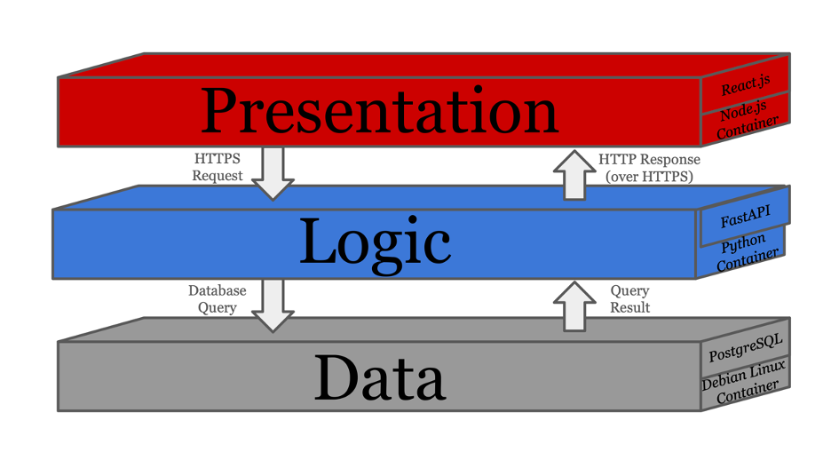
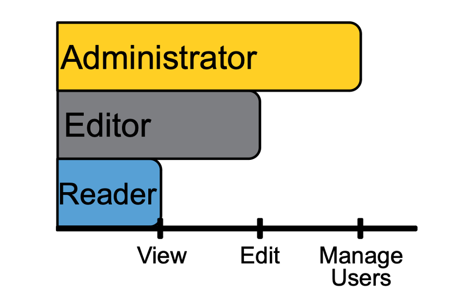

Halo is a comprehensive volunteer management application (VMA) developed to address specific needs identified by Angels Among Us Pet Rescue (AAU). AAU's current system is unable to effectively manage and store complex volunteer information, limiting its effectiveness. As the organization’s needs evolved, AAU required a more robust and secure solution to handle volunteer information efficiently. Our team designed Halo using the React.js library for the frontend, the Python based FastAPI framework for the backend, and a PostgreSQL database schema, with Docker containerization to ensure consistent deployment across environments. This setup enables efficient management of volunteer and team data, along with support for exporting reports in both .csv and .xlsx formats. To address security, Halo incorporates role-based access control (RBAC), differentiating access for administrators, editors, and viewers. We also implemented a Google Sign-On feature with JSON web tokens (JWT) to validate users' Google login information within the database. Additionally, an Extract, Transfer, and Load (ETL) script facilitates secure data requests directly on the server. Halo’s frontend offers an intuitive interface designed to enhance user experience, with extensive search and filtering capabilities that make it easy to access and manage volunteer data. These improvements result in faster query responses and a substantial boost in usability compared to AAU's previous system.
AAU required a new application focused on security and usability, enabling users to enhance volunteer and team data. Essential features included importing volunteer and team records from the existing iShelters database and designing a PostgreSQL database schema. The application also needed a frontend UI for authorized users to add detailed information to records. It also required thorough reporting during the data migration process. Deployment using Docker containers was necessary for scalability and management.
The Volunteer Management Application (VMA) website features a clean, user-friendly interface optimized for quick searches and advanced filtering of volunteer and team lists. Users can easily view, update, and enrich data for individual volunteers and teams, with the option to export lists based on any applied query or filter criteria. The design emphasizes accessibility and efficiency, enabling users to manage records seamlessly.
The VMA uses an ETL script to handle the extraction of 35 attributes from 7 tables in the iShelters database. It also manages their subsequent transformation and loading into HaloDB. This operation ensures the security of information in transit when attempting to send and receive requests by running locally on the website’s server without the need for external access.

Halo implements a Sign-On integration with Google, allowing volunteers to use one set of credentials for all their Google integrated applications. As part of this system, Halo uses an encrypted JSON Web Token (JWT) system that processes Google login information by validating it against the database and issuing tokens for all subsequent endpoint requests within the application. Each token contains user-specific information encrypted within the token string, allowing secure and efficient user identification across requests.
Our team developed a secure, containerized application that enables AAU to efficiently manage and enrich volunteer and team data. The implemented features allow users to import records, apply detailed search and filtering, and export customized lists, meeting AAU's requirements for usability and data accuracy. Additionally, the new system supports smooth data migration and syncing from existing sources and provides a solid foundation for ongoing volunteer management tasks.